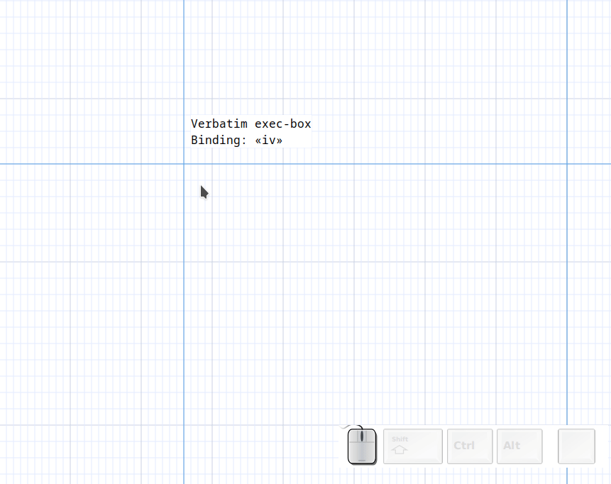
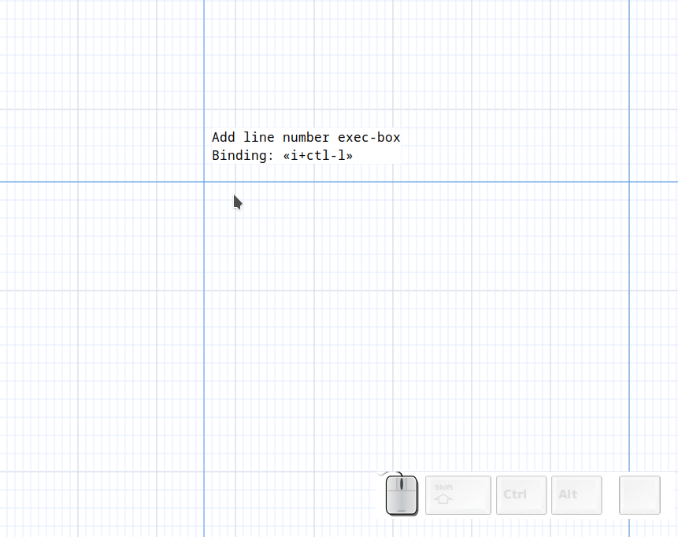

Asciio exec-boxes
An "exec-box" is and object that lets you run an external command and put its output in a box. There are different types of exec-boxes explained below.
Multi command
Binding: «ie» Add exec box
The simplest exec-box accepts multiple commands, one per line. It will redirect stderr for each command.
Editing the box will let you edit the command.

Verbatim
Binding: «iv» Add exec box verbatim
This exec-box doesn't redirect stderr, you can use it for commands that span multiple line or commands that take a multi line input
Editing the box will let you edit the command.

Once
Binding: «io» Add exec box verbatim once
This exec-box will run your commands once, editing the box will let you edit the command's output.

Add line numbers
Binding: «i + c-l» Add line numbered box
This is an example of a custom stencil which will add line numbers to your input.

Examples
Using previously generated output
If you already have text in a file you can use 'cat your_file' as the command.
Tables
tbd: Command: ...
+------------+------------+------------+------------+
| input_size ‖ algorithmA | algorithmB | algorithmC |
+============+============+============+============+
| 1 ‖ 206.4 sec. | 206.4 sec. | 0.02 sec. |
+------------+------------+------------+------------+
| 250 ‖ - | 80 min. | 2.27 sec. |
+------------+------------+------------+------------+
FIGlet
Figlet generates large letters out of ordinary text.

You can specify a font with the -f option.
$ ls /usr/share/figlet/
646-ca.flc 646-hu.flc 646-se2.flc big.flf lean.flf smslant.flf
646-ca2.flc 646-irv.flc 646-yu.flc block.flf mini.flf standard.flf
646-cn.flc 646-it.flc 8859-2.flc bubble.flf mnemonic.flf term.flf
646-cu.flc 646-jp.flc 8859-3.flc digital.flf moscow.flc upper.flc
646-de.flc 646-kr.flc 8859-4.flc frango.flc script.flf ushebrew.flc
646-dk.flc 646-no.flc 8859-5.flc hz.flc shadow.flf uskata.flc
646-es.flc 646-no2.flc 8859-7.flc ilhebrew.flc slant.flf utf8.flc
646-es2.flc 646-pt.flc 8859-8.flc ivrit.flf small.flf
646-fr.flc 646-pt2.flc 8859-9.flc jis0201.flc smscript.flf
646-gb.flc 646-se.flc banner.flf koi8r.flc smshadow.flf
For example, we want to specify this font: slant

This is the exported effect:
.-----------------------------------.
| _ _ _ |
| / \ ___ ___ (_)(_) ___ |
| / _ \ / __| / __|| || | / _ \ |
| / ___ \ \__ \| (__ | || || (_) | |
| /_/ \_\|___/ \___||_||_| \___/ |
| |
'-----------------------------------'
.------------------------------------.
| ___ _ _ |
| / | _____ _____ (_)(_)____ |
| / /| | / ___// ___// // // __ \ |
| / ___ | (__ )/ /__ / // // /_/ / |
| /_/ |_|/____/ \___//_//_/ \____/ |
| |
'------------------------------------'
Diagon
Diagon transforms markdown expressions into an ascii-art representation.

Mathematical Expressions

File Tree
Use exec verbatim box to input multiple lines.